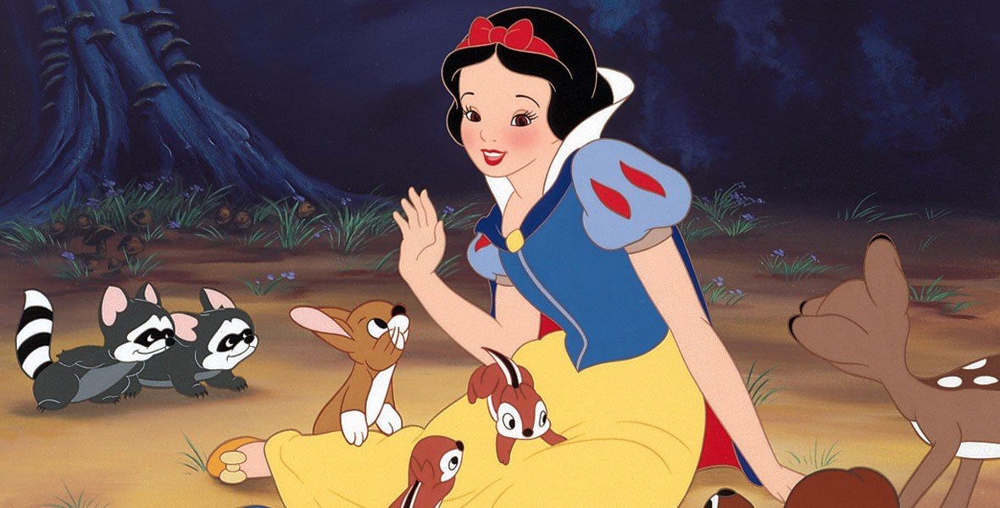

Snow white part 3
The great forest:
But now the poor child was all alone in the great forest, and so terrified that she looked at all
the leaves on the trees, and did not know what to do
Then she began to run, and ran over
sharp stones and through thorns, and the wild beasts ran past her, but did her no harm.
She ran as long as her feet would go until it was almost evening, then she saw a little cottage
and went into it to rest herself.
Everything in the cottage was small, but neater and cleaner
than can be told.
There was a table on which was a white cover, and seven little plates,
and on each plate a little spoon, moreover, there were seven little knives and forks, and seven
little mugs.
Against the wall stood seven little beds side by side, and covered with snow-white
counterpanes.
